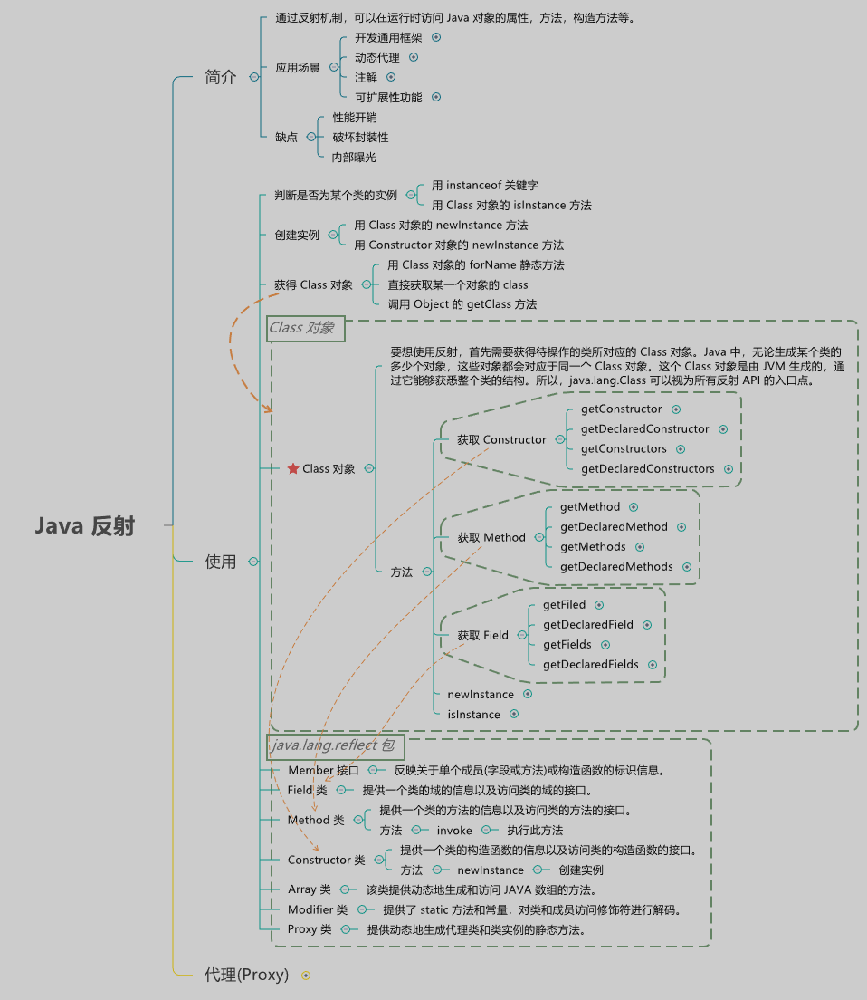
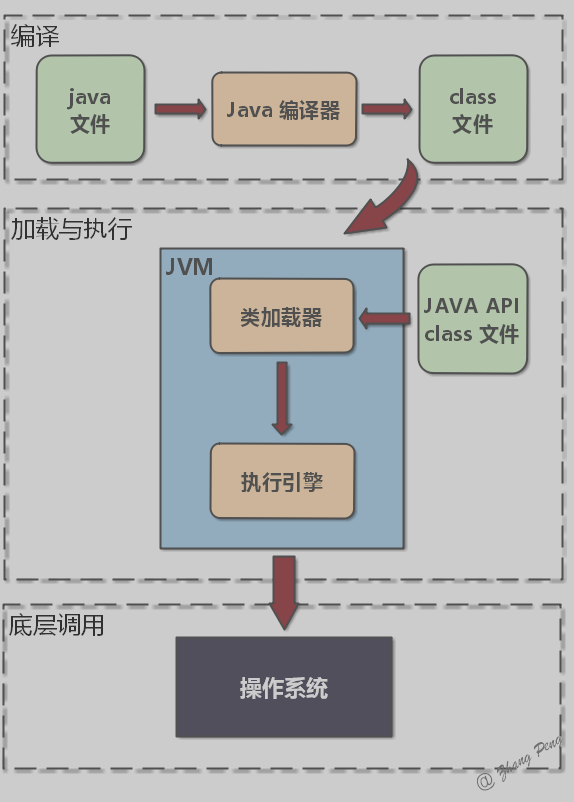

# 注解
# Annotation 的定义
从本质上来说，注解是一种标签，其实质上可以视为一种特殊的注释，如果没有解析它的代码，它并不比普通注释强。
# 形式
解析一个注解往往有两种形式：
- 编译期直接的扫描 - 编译器的扫描指的是编译器在对 java 代码编译字节码的过程中会检测到某个类或者方法被一些注解修饰，这时它就会对于这些注解进行某些处理。这种情况只适用于 JDK 内置的注解类。
- 运行期的反射 - 如果要自定义注解，Java 编译器无法识别并处理这个注解，它只能根据该注解的作用范围来选择是否编译进字节码文件。如果要处理注解，必须利用反射技术，识别该注解以及它所携带的信息，然后做相应的处理。
# 作用
注解有许多用途：
- 编译器信息 - 编译器可以使用注解来检测错误或抑制警告。
- 编译时和部署时的处理 - 程序可以处理注解信息以生成代码，XML 文件等。
- 运行时处理 - 可以在运行时检查某些注解并处理。
# 代价
凡事有得必有失，注解技术同样如此。使用注解也有一定的代价：
- 它是一种侵入式编程，自然就存在着增加程序耦合度的问题。
- public 成员，也可以通过反射获取。这就违背了面向对象的封装性。
- 注解所产生的问题，相对而言，更难以 debug 或定位。
但是，正所谓瑕不掩瑜，注解所付出的代价，相较于它提供的功能而言，还是可以接受的。
# 反射

# 定义
反射 Reflection 是 Java 程序开发语言的特征之一，它允许运行中的 Java 程序获取自身的信息，并且可以操作类或对象的内部属性。
通过反射机制，可以在运行时访问 Java 对象的属性，方法，构造方法等。
# 应用场景
- 开发通用框架 - 反射最重要的用途就是开发各种通用框架。很多框架（比如
Spring）都是配置化的（比如通过 XML 文件配置JavaBean、Filter等），为了保证框架的通用性，它们可能需要根据配置文件加载不同的对象或类，调用不同的方法，这个时候就必须用到反射 —— 运行时动态加载需要加载的对象。 - 动态代理 - 在切面编程
AOP中，需要拦截特定的方法，通常，会选择动态代理方式。这时，就需要反射技术来实现了。 - 注解 - 注解本身仅仅是起到标记作用，它需要利用反射机制，根据注解标记去调用注解解释器，执行行为。如果没有反射机制，注解并不比注释更有用。
- 可扩展性功能 - 应用程序可以通过使用完全限定名称创建可扩展性对象实例来使用外部的用户定义类。
# 缺点
- 性能开销 - 由于反射涉及动态解析的类型，因此无法执行某些 Java 虚拟机优化。因此，反射操作的性能要比非反射操作的性能要差，应该在性能敏感的应用程序中频繁调用的代码段中避免。
- 破坏封装性 - 反射调用方法时可以忽略权限检查，因此可能会破坏封装性而导致安全问题。
- 内部曝光 - 由于反射允许代码执行在非反射代码中非法的操作，例如访问私有字段和方法，所以反射的使用可能会导致意想不到的副作用，这可能会导致代码功能失常并可能破坏可移植性。反射代码打破了抽象，因此可能会随着平台的升级而改变行为。
# 反射机制
# 类加载过程

- 在编译时，Java 编译器编译好
.java文件之后，在磁盘中产生.class文件。.class文件是二进制文件，内容是只有 JVM 能够识别的机器码。 - JVM 中的类加载器读取字节码文件，取出二进制数据，加载到内存中，解析
.class文件内的信息。类加载器会根据类的全限定名来获取此类的二进制字节流；然后，将字节流所代表的静态存储结构转化为方法区的运行时数据结构；接着，在内存中生成代表这个类的java.lang.Class对象。 - 加载结束后，JVM 开始进行连接阶段（包含验证、准备、初始化）。经过这一系列操作，类的变量会被初始化。
# 反射 API-Class 类
Class 类是反射的基础类，它提供了许多有用的方法来操作类和类的成员。这个 Class 对象是由 JVM 生成的，通过它能够获悉整个类的结构。所以， java.lang.Class 可以视为所有反射 API 的入口点。
反射的本质就是：在运行时，把 Java 类中的各种成分映射成一个个的 Java 对象。
# 方法的反射调用
方法的反射调用，也就是 Method.invoke 方法。
Method.invoke 方法源码：
1 | public final class Method extends Executable { |
Method.invoke 方法实际上委派给 MethodAccessor 接口来处理。它有两个已有的具体实现：
NativeMethodAccessorImpl：本地方法来实现反射调用DelegatingMethodAccessorImpl：委派模式来实现反射调用
每个 Method 实例的第一次反射调用都会生成一个委派实现 DelegatingMethodAccessorImpl ，它所委派的具体实现便是一个本地实现 NativeMethodAccessorImpl 。本地实现非常容易理解。当进入了 Java 虚拟机内部之后，我们便拥有了 Method 实例所指向方法的具体地址。这时候，反射调用无非就是将传入的参数准备好，然后调用进入目标方法。
# Ref
- ref1